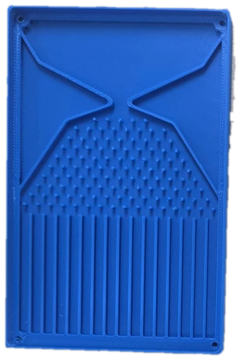
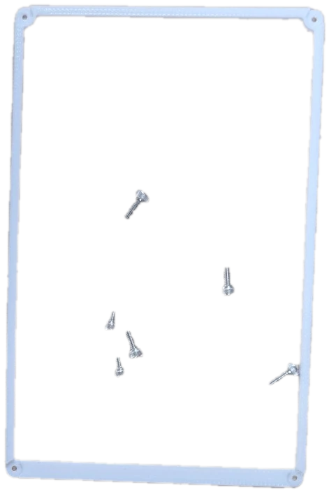
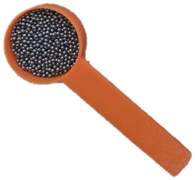
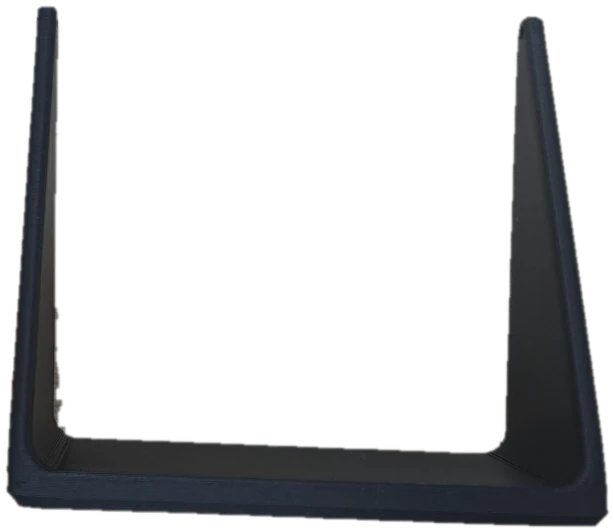
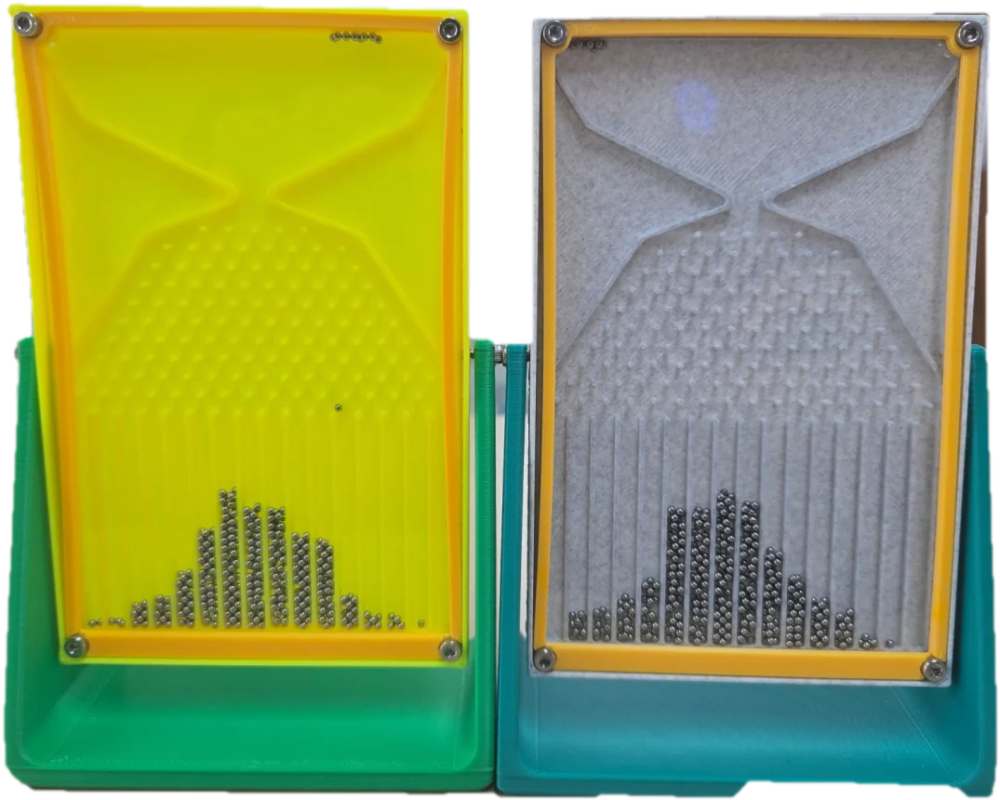

재료




본체 케이스아크릴 판가이드 패널M2.5 볼트구슬 8g스탠드
※ 아크릴 판은
사진 대신 그림
완성!

가운데가 높은 종 모양으로 쌓여요
준비물
- 본체 케이스1
- 아크릴 판1
- 가이드 패널1
- 스탠드1
- 금속 구슬8g
- M2.5 볼트6개
1
구슬 8g 넣기
구슬 8g을 저울로 재어
본체 케이스에 넣어요
2
아크릴 판 덮기
케이스 위에
투명 아크릴 판을 덮어요
3
패널 잠그기
가이드 패널을 올리고
네 꼭지점을
M2.5 볼트 4개로 잠가요
4
흐름 확인
보드를 세워 구슬이
막힘없이 흘러내리는지
확인해요
5
스탠드 연결
스탠드 양쪽에
M2.5 볼트 2개를 넣어
본체와 연결해요
6
실험하기!
구슬이 쌓이는 모양을
관찰해요.
어떤 모양이 될까요?
태블릿 예측과 비교!
갈톤 보드와 정규분포 수학
막대 위 숫자 = 칸별 이론상 비율(%)
파스칼 삼각형(길의 수)
- 핀마다 왼쪽·오른쪽 확률은 1/2씩
15번 갈린 뒤 오른쪽으로 간 횟수가
도착 칸을 정해요
- 가운데 칸에 이르는 길은
32768가지 중 6435가지,
비율로 약 19.6%예요
- 구슬이 많아질수록 가운데가 높고
양쪽이 낮은 정규분포에 가까워져요
가운데 4칸(7~10번)에 약 70%가 모이고
퍼진 정도(표준편차)는 약 1.9칸이에요
⚠️ 작은 금속 구슬은 입에 넣지 않아요! 바닥에 떨어진 구슬은 바로 주워요.